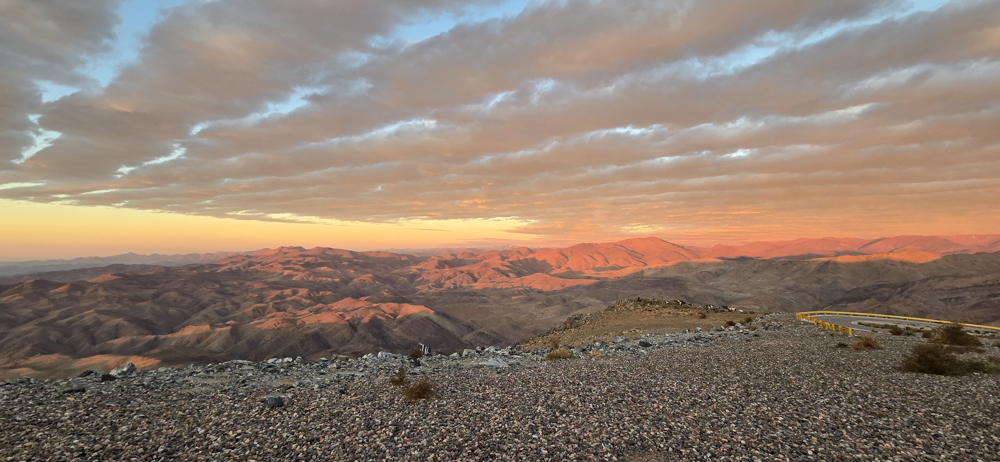

Home
Research
Outreach/Scicomm
Data Visualization
Publications
CV
Publications
ADS Bibliography

Academic Publications
First Author
Gozman K.
, Bell E. F., Jang I. S., et al. (2024),
Exploring the Diversity of Faint Satellites in the M81 Group
, ApJ, 977, 179.
Gozman K.
, Bell E. F., Smercina A., et al. (2023),
Saying Hallo to M94's Stellar Halo: Investigating the Accretion History of the Largest Pseudobulge Host in the Local Universe
, ApJ, 947, 21.
Nth Author
Cloonan A. P., Khullar G., Napier K. A., et al. (2025),
COOL-LAMPS. VIII. Known Wide-separation Lensed Quasars and Their Host Galaxies Reveal a Lack of Evolution in M
BH
/M
⋆
since z~3
, ApJ, 987, 194.
*Arias J. M., Bell E. F.,
Gozman K.
, et al. (2025),
Andromeda XXXV: The Faintest Dwarf Satellite of the Andromeda Galaxy
, ApJL, 982, L3.
Mork S. D., Gladders M. D., Khullar G., et al. (2025),
COOL-LAMPS. VII. Quantifying Strong-lens Scaling Relations with 177 Cluster-scale Strong Gravitational Lenses in DECaLS
, ApJ, 979, 184.
Velguth B. N., Bell E. F., Smercina A., et al. (2024),
A Timeline of the M81 Group: Properties of the Extended Structures of M82 and NGC 3077
, ApJ, 974, 189.
Klein M., Sharon K., Napier K., et al. (2024),
COOL-LAMPS. VI. Lens Model and New Constraints on the Properties of COOL J1241+2219, a Bright z = 5 Lyman Break Galaxy and its z = 1 Cluster Lens
, ApJ, 963, 44.
Zhang Y., Manwadkar V., Gladders M. D., et al. (2023),
COOL-LAMPS. IV. A Sample of Bright Strongly Lensed Galaxies at 3 < z < 4
, ApJ, 950, 58.
Smercina A., Bell E. F., Price P. A., et al. (2023),
Origins of the Evil Eye: M64's Stellar Halo Reveals the Recent Accretion of an SMC-mass Satellite
, ApJL, 949, L37.
Martinez M. N., Napier K. A., Cloonan A. P., et al. (2023),
COOL-LAMPS. III. Discovery of a 25.″9 Separation Quasar Lensed by a Merging Galaxy Cluster
, ApJ, 946, 63.
Sukay E., Khullar G., Gladders M. D., et al. (2022),
COOL-LAMPS. II. Characterizing the Size and Star Formation History of a Bright Strongly Lensed Early-type Galaxy at Redshift 1.02
, ApJ, 940, 42.
Bell E. F., Smercina A., Price P. A., et al. (2022),
Ultrafaint Dwarf Galaxy Candidates in the M81 Group: Signatures of Group Accretion
, ApJL, 937, L3.
Florian M. K., Rigby J. R., Acharyya A., et al. (2021),
Spatial Variation in Strong Line Ratios and Physical Conditions in Two Strongly Lensed Galaxies at z~1.4
, ApJ, 916, 50.
*Khullar G.,
Gozman K.
, Lin J. J., et al. (2021),
COOL-LAMPS. I. An Extraordinarily Bright Lensed Galaxy at Redshift 5.04
, ApJ, 906, 107.
* indicates papers where I played a significant role in mentoring at least one of the authors
Looking for my articles that are written for the general public? Find them in the
Outreach/Scicomm
section!